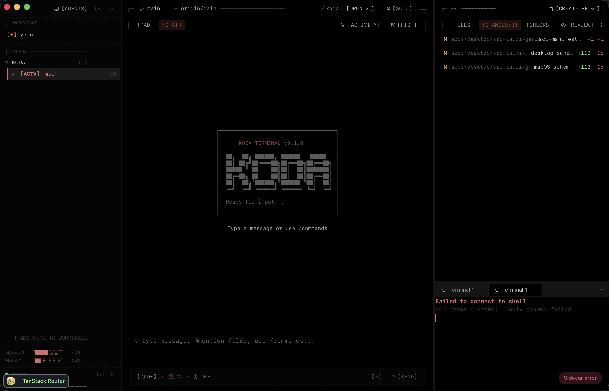

Chessable Edge
Chessable Edge was Chessable's design system and UI component library. We built it in React with Clutch, a visual builder for React, and published it to npm as @chessable/edge, with its core split into a package of its own. Three teams were using it in production.
The video is the guide for developers I made for the teams adopting it. It covers what Edge is, how Clutch works, how to get started, and where the system was going next: a shared process, a public roadmap and documentation generated with Storybook.
The Pulse
The Pulse runs on 33 components built on Shadcn and Radix, with its colors and type set as tokens. Each story world has its own accent color: sea green for Shadow Over Innsmouth, deep purple for Hollow Choir, Mars rust for Red Dust. The narrated text has its own type tokens for font, size, line height and letter spacing. A few components are its own, like the fog layer and the orb.
Koda
Koda shares the same base, 25 components on Shadcn and Radix, in a desktop app built with Tauri. Its main screen shows a coding agent's run as it happens, with its messages, tool calls and diffs, and a teammate can follow it live from their own machine.

Roadie
I was the de facto UI and product-design lead at Roadie, and I modernized the interface of its Backstage-based developer platform end to end.
Earlier
- BBVA CellsUI engineer on Cells, a framework for BBVA's mobile apps built on Polymer and web components, shown at Google I/O 2016. 2015–2016.
- ING DirectUI engineer on the new mobile app, built on Polymer. 2016.
- William HillPrototyped and built parts of the sportsbook redesign with the in-house designers. 2012–2014.